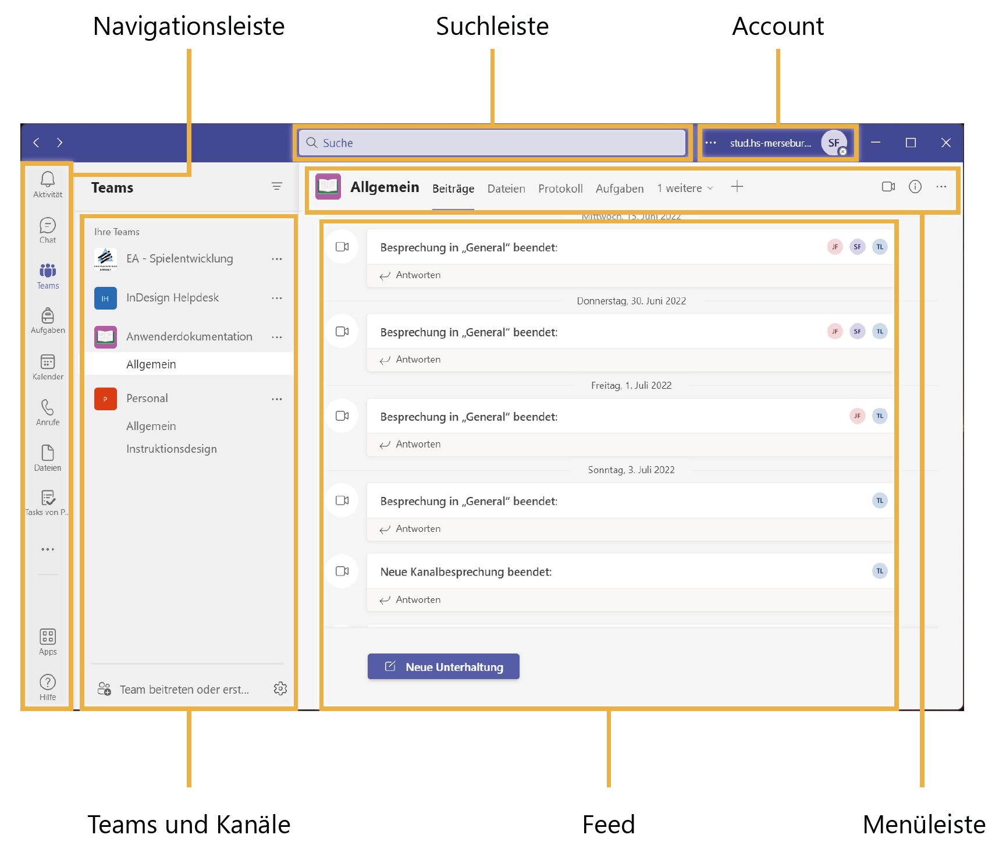

MS Teams für Studierende
Start InfoMicrosoft Teams - Kurzanleitung

Ein Projekt für den Kurs Mobile Dokumentation im Wintersemester 2022/23, umgesetzt mit DocBook und jQuery Mobile.
Master IDMM 21 | Text- und Bildinhalte: Fahle, Julia; Frank, Sebastian; Looke, Theresa
© 2022 Hochschule Merseburg / Fachbereich WIW
Hochschule Merseburg
Fachbereich WIW
Sebastian Frank
Rudolf-Haym-Straße 28
06110 Halle
Deutschland
☎ +49 3461 46 2424
📧 sebastian.frank2@stud-hs-merseburg.de
06.01.2023
Microsoft Teams (kurz MS Teams oder Teams) ist eine Anwendung für Teamarbeit und einfaches Projektmanagement. Dieses chatbasierte Kollaborationstool kann dir mittels virtueller Räume den perfekten Arbeitsplatz bieten, um mit deinem Team an gemeinsamen Projekten zu arbeiten. Das Programm dient der digitalen Unterstützung einer effektiveren Kommunikation und Zusammenarbeit im Team. Es basiert auf vorhandener Microsoft-Technologie und kann mit anderen Office 365-Diensten integriert werden.
Microsoft Teams unterstützt unterschiedliche Arten von Apps, die sowohl von Microsoft als auch von Drittanbietern entwickelt wurden. Microsoft ermöglicht auch die Einbindung von sozialen Medien in Teams.
Mithilfe von Microsoft Teams kannst du mit deinem Team zentral an einem Ort arbeiten. Der Fokus liegt auf drei Hauptfunktionen:
Chatten
Meetings halten
Projekte im Team managen
Neben Chat-, Anruf- und Besprechungsfunktionen bietet der Dienst Zugriff auf viele andere Office 365-Dienste. Arbeite professionell im Team zusammen und nutze die Funktionen von Teams, um dein Aufgabenmanagement zu optimieren.
Mit Microsoft Teams können du und dein Team synchron an denselben Dokumenten arbeiten. Darüber hinaus kannst du alle Office 365-Dokumente, wie SharePoint Online, Skype for Business, Office Groups, OneDrive oder Microsoft Planner, in das Kommunikationstool integrieren. Auch zahlreiche Anwendungen von Drittanbietern lassen sich problemlos in Teams einbinden.
Bei der Zusammenarbeit in Microsoft Teams hast du mehrere Möglichkeiten zur Kommunikation:
Chats, Videokonferenzen und Audioanrufe betreiben.
Videokonferenzen aufnehmen.
Digitale Whiteboards nutzen.
Vereinfachte Chat-, Personen- und Dokumentensuche nutzen.
Die verschlüsselte Ende-zu-Ende-Kommunikation schützt deine Daten und Dokumente bei der Übertragung. Zudem ist Teams auf allen Geräten verfügbar und mit allen Endgeräten kompatibel.
Die Digitalisierung verlagert die Kommunikation mehr denn je in virtuelle Räume, und es besteht eine steigende Nachfrage an:
schnellem Arbeiten,
besserer technischer Innovation,
digitaler Zusammenarbeit.
Diese Kurzanleitung begleitet dich beim Einstieg in Microsoft Teams und unterstützt dich Schritt für Schritt. Ziel ist es, allen Studierenden die Zusammenarbeit untereinander zu erleichtern, die Kommunikation und Abstimmung zu unterstützen und Projekte effektiv zu planen und zu steuern.
Du lernst von der Bedienung der Benutzeroberfläche bis hin zum gemeinsamen Arbeiten mittels Dokumenten und Meetings die wichtigsten Grundlagen für ein effizientes Arbeiten im digitalen Raum.
Mit dieser Anleitung gelingt deine Zusammenarbeit mit deinen Kommiliton:innen auf jeden Fall!


In der Navigationsleiste auf das Symbol Teams
 klicken. 1
klicken. 1
Deine Teams sowie gegebenenfalls ausgeblendete Teams erscheinen.
Auf den Button Einem Team beitreten oder erstellen
 klicken 2.
klicken 2.
Im Feed erscheinen bereits erstellte Teams der Organisation in Kachelansicht. Diese Teams sind öffentlich sichtbar und frei zugänglich.
In der ersten Kachel Team erstellen
 auf den Button Team erstellen klicken. 3
auf den Button Team erstellen klicken. 3
Ein neues Fenster öffnet sich, in dem Daten für das neue Team eingestellt werden müssen.
Einen Team-Namen und optional eine Beschreibung hinzufügen. Im Dropdown-Menü unter Datenschutz die Einstellung Privat auswählen und den Button Weiter anklicken. 4
Ein neues Fenster öffnet sich.
Team-Mitglieder durch Eingeben von Namen oder Gruppen suchen und auswählen oder auf den Button Überspringen klicken.
Die ausgewählten Personen werden dem Team hinzugefügt.
Dein neu angelegtes Team erscheint in einer neuen Registerkarte innerhalb des Feeds im Bereich Teams innerhalb der Navigationsleiste. Über diese Registerkarte kommst du direkt in das neu erstellte Team.
Wenn du dein Team auf Öffentlich stellst, kann jedes Mitglied deiner Organisation dem Team beitreten und mitarbeiten. Damit sind deine Dateien innerhalb des Teams für die Mitglieder deiner Organisation öffentlich zugänglich.
Auf das Icon Weitere Optionen
 neben dem Team-Namen klicken. 1
neben dem Team-Namen klicken. 1
Ein neues Fenster öffnet sich.
Auf die Option Kanal Hinzufügen
 klicken. 2
klicken. 2
Ein neues Fenster öffnet sich.
Grundeinstellungen für den Kanal vornehmen.
Namen und optional Beschreibung für den Kanal hinzufügen.
Die gewünschte Datenschutz-Option im Dropdown-Menü auswählen.
Um den Kanal automatisch in der Kanalliste aller Nutzer des Teams anzeigen zu
lassen, gegebenenfalls den Haken
 entsprechenden Kästchen setzen.
entsprechenden Kästchen setzen.
Auf den Button Hinzufügen klicken.
Dein neuer Kanal ist erstellt.
In der Menüleiste auf den Button Registerkarte hinzufügen
 klicken. 1
klicken. 1
Ein neues Fenster öffnet sich.
Registerkarte suchen und auswählen. 2
Ein neues Fenster öffnet sich.
Registerkarte einrichten.
Auf den Button Speichern klicken.
Deine gewählte App oder Datei ist als Registerkarte zum Kanal hinzugefügt.
Auf den Button Weitere hinzugefügte Apps
 links in der Navigationsleiste klicken. 1
links in der Navigationsleiste klicken. 1
Ein neues Fenster öffnet sich.
Gewünschte App über die Suchleiste oder direkt bei den vorgeschlagenen Icons suchen. 2
Die gewünschte App per Rechtsklick anklicken. 3
Ein neues Fenster erscheint.
Die Option
 Anheften anklicken. 4
Anheften anklicken. 4
Deine gewählte App ist nun dauerhaft an die Navigationsleiste angeheftet.
Über den Link Weitere Apps kannst du dir einen Überblick über weitere hilfreiche
Apps für dein Team verschaffen. Du kannst auch sofort zur App-Auswahl
gelangen, indem du auf den Bereich Apps
 im unteren Teil der Navigationsleiste klickst.
im unteren Teil der Navigationsleiste klickst.
Microsoft Teams ermöglicht:
In der Menüleiste in die Registerkarte Dateien wechseln. 1
Auf den Button
 Hochladen klicken. 2
Hochladen klicken. 2
Ein neues Fenster öffnet sich.
Im Dropdown-Menü eine der Optionen Dateien oder Ordner wählen. 3
Ein neues Fenster öffnet sich.
Entsprechende Dateien oder Ordner in der Ordner-Struktur des Endgerätes auswählen. 4
Ein neues Fenster öffnet sich.
Mit Klick auf den Button Öffnen bzw. Ordner auswählen bestätigen. 5
Deine Datei oder dein Ordner ist unter der Registerkarte Dateien hochgeladen.
Hochgeladene Ordner und Dateien sind jeweils ausschließlich innerhalb des ausgewählten Kanals im Team verfügbar.
Hochgeladene Ordner und Dateien sind für alle Personen im Team sichtbar, bearbeitbar und herunterladbar.
In der Menüleiste in die Registerkarte Dateien wechseln. 1
Das entsprechende Dokument in der Ordnerstruktur anklicken. Alternativ per Rechtsklick auf das Dokument klicken, im Kontextmenü auf Öffnen klicken und eine der angezeigten Optionen im Dropdown- Menü auswählen. 2
Das Dokument öffnet sich und du kannst mit deinem Team synchron daran arbeiten.
Wenn eine Personen in deinem Team etwas am Dokument ändert, zeigt dir Microsoft Teams die Änderungen an, sobald du das Dokument öffnest.
Wenn mehrere Personen ein Dokument gleichzeitig bearbeiten, erscheint rechts in der Menüleiste des Dokumentes ein Hinweis.

Im Kalender Datum und Zeitraum für den geplanten Termin anklicken.
Ein neues Fenster öffnet sich.
Den Titel für die Besprechung hinzufügen. 2
Erforderliche Personen über ihren Namen oder ihre E-Mail-Adresse suchen
und auswählen. Durch Klick auf den Button
 Optional Personen zur Besprechung
einladen, die selbst über ihre Teilnahme entscheiden sollen. 3
Optional Personen zur Besprechung
einladen, die selbst über ihre Teilnahme entscheiden sollen. 3
Den Zeitraum für die Besprechung final festlegen: Direkt in die Felder hineinschreiben oder per Klick über die Kalender- und Stundenansicht die Daten festlegen. 4
Über das Feld Kanal hinzufügen bestimmen, in welchem Team und welchem Kanal die Besprechung stattfinden soll. 5
Optional den Ort hinzufügen, wenn ein Präsenztermin geplant ist. 6
Optional Beschreibung hinzufügen, um Details für die Teilnehmenden festzuhalten. 7
Nach Eingabe der Daten auf den Button Speichern klicken. 8
Deine Besprechung ist als Termin sowohl in deinem Kalender als auch den Kalendern der eingeladenen Personen mit allen Details eingetragen.
Über den Reiter Terminplanungs-Assistent in der Menüleiste kannst du die Kalender der anderen Personen in deinem Team einsehen. So kannst du den Termin zeitlich besser an die Verfügbarkeit der anderen Personen anpassen.
Microsoft Teams bietet verschiedene Möglichkeiten, sich in Chats auszutauschen:
In der Chatliste den Button Neuer Chat
 auswählen. 1
auswählen. 1
Eine Suchleiste im oberen Bereich des Feeds erscheint.
Den Namen oder die E-Mail-Adresse der gewünschten Person eingeben.
Auf die entsprechende Person klicken.
Im Textfeld eine Nachricht eintippen und per Eingabetaste senden. 4
Der Chat mit der ausgewählten Person ist geöffnet.
Wenn du einen Chat mit mehreren Personen öffnen möchtest, dann wiederhole die Schritte 2 und 3 für jede Person, die du dem Chat hinzufügen möchtest. Bei Microsoft Teams kannst du Chats mit bis zu 250 Personen einrichten.
Unter dem Feld Zuletzt direkt in der Chatliste den gewünschten Chat anklicken.
Eine Nachricht im Feld am unteren Rand des Feeds verfassen. Über die unterschiedlichen Icons unterhalb des Bereichs Eine neue Nachricht eingeben können Inhalte im Chat geteilt werden. 2
Eingabetaste drücken, um die Nachricht zu senden.
Deine Nachricht mit dem angehängten Inhalt erscheint im Chat.
Um deine Nachricht optimal zu formatieren, kannst du unterhalb des Textfeldes
Eine neue Nachricht eingeben die beiden Buttons
 Formatieren und
Formatieren und
 Loop-Komponenten auswählen und anschließend benutzerdefinierte Einstellungen
vornehmen.
Loop-Komponenten auswählen und anschließend benutzerdefinierte Einstellungen
vornehmen.
Rechts oben neben dem Gruppennamen auf den Button Gruppen-Chat benennen
 klicken. 1
klicken. 1
Ein Eingabefeld erscheint.
Den neuen Gruppennamen eingeben und abspeichern. 2
Der Gruppenchat ist umbenannt.
In der Menüleiste auf den Button Teilnehmer anzeigen und hinzufügen
 klicken. 1
klicken. 1
Ein neues Fenster öffnet sich. Alle Personen im Chat sind nach Klick auf das
Symbol
 untereinander aufgelistet.
untereinander aufgelistet.
Auf den Button Kontakte hinzufügen klicken. 2
Ein neues Fenster erscheint.
Neue Gruppenmitglieder über ihren Namen oder ihre E-Mail suchen und anwählen. Anschließend auf den Button Hinzufügen klicken. 3
Zu deinem Chat sind weitere Gruppenmitglieder hinzugefügt.
Die kleine Zahl rechts neben dem Symbol Teilnehmer anzeigen und hinzufügen
 zeigt die akutelle Zahl der am Chat teilnehmenden Personen an.
zeigt die akutelle Zahl der am Chat teilnehmenden Personen an.
Wie viele Teams kann ich maximal anlegen?
Aktuell liegt die maximal mögliche Anzahl an Teams, die jede Person selbst erstellen kann, bei 250 Teams.
Wie viele Kanäle kann ich maximal anlegen?
Aktuell liegt die maximal mögliche Anzahl an Kanälen pro Team bei 200 Kanälen. Dazu zählen auch gelöschte Kanäle im Papierkorb, denn erst 30 Tage, nachdem du einen Kanal gelöscht hast, löscht Microsoft automatisch und endgültig den Kanal. Davon abgesehen liegt aktuell die maximal mögliche Anzahl an privaten Kanälen pro Nutzer bei 30 Kanälen.
In wie vielen Teams kann ich Mitglied sein?
Aktuell liegt die maximal mögliche Anzahl an Teams, in denen eine Person gleichzeitig Mitglied sein kann, bei 1.000 Teams.
Wie viele Mitglieder kann ein einzelnes Teams höchstens haben?
Aktuell liegt die maximal mögliche Anzahl an Personen in jedem einzelnen Team bei 5.000.
Gibt es eine maximale Dateigröße?
Ja, es gibt Grenzwerte bei den Dateigrößen in Microsoft Teams. Aktuell liegt die Maximalgröße für Dateiuploads in Microsoft Teams bei 250 GB Dateigröße. Die Maximalgröße eines Beitrags in einem Chat-Beitrag oder einer Kanalunterhaltung liegt bei 28 KB pro Beitrag (inklusive Links, Konnektoren, Reaktionen, etc.) und die Maximalgröße einer Teams-Nachricht bei 24 KB.
Kann ich mit Personen, die sich nicht innerhalb meiner Organisation befinden, zusammen in einem Team arbeiten?
Ja, eine Teambesitzer:in in Microsoft Teams kann Gäste in eigene Teams hinzufügen. Jede Person, die über ein eigenes E-Mail-Konto verfügt, hat als Gast volle Zugriffsmöglichkeiten in Teams. Als Gäste kannst du nur Personen hinzufügen, die sich außerhalb deiner Organisation befinden. Personen innerhalb deiner Organisation können regulär als Teammitglied beitreten.
Wie stelle ich sicher, dass Personen in einem Team oder einem Kanal meine Nachricht sehen?
An besten funktioniert das, indem du sie in der entsprechenden Nachricht mit vorangestelltem @-Zeichen erwähnst. Wenn du ein @ unmittelbar vor dem Namen der Person schreibst, erhält die Person automatisch eine Benachrichtigung darüber. Um die Aufmerksamkeit des gesamten Teams zu erhalten, gib vor deiner Nachricht @team ein und alle Personen im Team erhalten Benachrichtigungen.
Welche Browser unterstützt Microsoft Teams?
Kann ich Teams auch mobil von unterwegs nutzen?
Micorsoft Teams ist auf allen mobilen Endgeräten in der Fülle seiner Funktionen nutzbar. Das Programm funktioniert dabei über die mobile Teams-App. Über den App-Store deines Mobilgeräts kannst du die App herunterladen und anschließend mit der Arbeit durchstarten.
Gibt es eine Übersicht über alle möglichen Shortcuts für Teams?
Ja. Oben links neben dem Account kannst du auf das Icon
 Einstellungen und mehr klicken. Im neuen Fenster kannst du auf Tastenkommbinationen klicken.
Oder einfach Strg + E auf der Tastatur drücken, im Suchfeld nach Tastenkombinationen
suchen und per Eingabetaste auf die Tastenkombinationen zugreifen.
Einstellungen und mehr klicken. Im neuen Fenster kannst du auf Tastenkommbinationen klicken.
Oder einfach Strg + E auf der Tastatur drücken, im Suchfeld nach Tastenkombinationen
suchen und per Eingabetaste auf die Tastenkombinationen zugreifen.